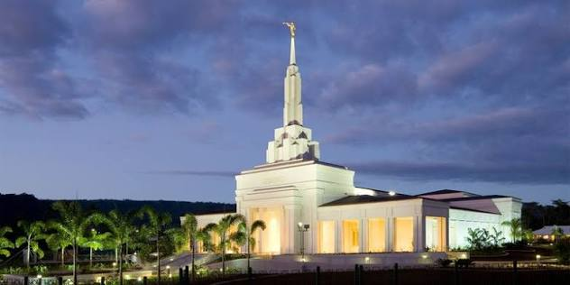

Apia Samoa Temple
For the longest time this was Samoa's only temple until recently construction began for two other temples. The first was American Samoa's temple announced in 2019 and completed in 2026. The second is the Savai'i Samoa temple announced in 2023 and currently still in construction.
